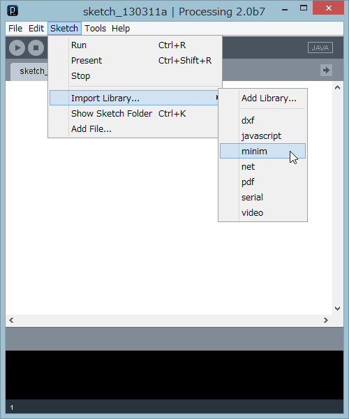

クラスを使う
Processingのプログラムを作成する際、すべてを自分で書く必要があるとは限りません。ほかの人が作ったプログラムの部品、クラスを組み合わせることで、自分の目的とする機能をもったプログラムを作り上げることができます。クラスを使うことは、プログラミングの基本知識の「クラスの定義」セクションにも説明があります。そこでは、自分でクラス(部品)を作り、使っていますが、ここではほかの人が作ったクラスを使ってみましょう。
スクロールバーで値を指定
ユーザが操作する入力部品スクロールバーを使って、値を指定するサンプルを考えます。ほかの人が作ったクラスを使う場合、そのクラスの中身(ソースコード)がどうなっているかは知る必要はありません。そのクラスに、どのような変数、コンストラクタ、メソッドが定義されているかがわかれば、使えます。このような情報のことをAPI(Application Programming Interface)と呼びます。
スクロールバークラスのAPIは次のようなものとします。
クラス名: Scrollbar
マウスで操作し、値を指定するための水平スクロールバー。
コンストラクタでスクロールバーの最小、最大値を指定する。
draw()の中で、update(),display()メソッドを実行することで、マウスによるノブの操作が描画に
反映する。その後getPos()により、ノブの位置に応じた値を得る。
スクロールバークラス内で描画の時、線と塗りの色を変えるので、display()メソッドで
スクロールバーを描いた後、別の描画する場合は線と塗りを設定しなおす必要がある。
メソッド：
void update() ノブが操作されている時、ノブの位置を計算
void display() バーを表示
float getPos() ノブの値を得る
boolean over() マウスがバーの上にある時は、trueを返す
コンストラクタ：
Scrollbar(x, y, w, h, min, max)
x, y: float, バーの左上角の座標
w : float, バーの幅
h : float, バーの高さ
min : float, ノブが左端にあるときの値
max : float, ノブが右端にあるときの値
【例】
Scrollbar bar = new Scrollbar(50, 30, 200, 10, 0, 100);
バーの位置(50,30)、バーの幅200、高さ10、バーが返す値の範囲0-100
上記のScrollbarクラスは、Processingが提供するサンプル(Java Examples)のTopicsのGUIの中にある、Scrollbarを元に手を加えたものです。描画ウィンドウの中央に一つの円を描き、その大きさをスクロールバーのノブの操作で変えるプログラムがリスト10-1です。
まず、スクロールバークラスから、コンストラクタを使ってオブジェクトを生成し、後で使えるように、変数に入れておきます。オブジェクトを作るのは1回だけでいいので、これはsetup()の中で実行します。
マウスによるノブの操作によって動的に描画を変えるため、draw()の中で、 スクロールバーのノブの位置を計算、描画、値の取得をします。この3つの処理をするメソッドは何か、引数、戻り値は何かなど使い方をスクロールバーのAPIで確認し、オブジェクトとメソッドをピリオドでつなげて、呼出します。
オブジェクト.メソッド名(引数)
↓ ↓
bar.update(); //ノブの位置を計算
bar.display(); //スクロールバーを描く
d = bar.getPos(); //ノブの位置を得て、変数に代入
その後、取得した値を直径とした円を描きます。描く前に描画の線と塗りの色を指定しています。
マウスドラッグでスクロールバー操作
【リスト10-1】
Scrollbar bar; //スクロールバーのオブジェクト用変数
float SW = 200; //スクロールバーの幅
float SH = 15; //スクロールバーの高さ
float d; //描く円の直径
void setup(){
size(250,250);
//オブジェクトを生成、変数に入れる
bar = new Scrollbar(250/2-SW/2, 20, SW, SH, 0, 170);
}
void draw(){
background(255);
bar.update(); //スクロールバーが操作されていたら、ノブの位置を計算
bar.display(); //スクロールバーを描く
d= bar.getPos(); //ノブの位置を得て、直径にする
fill(225, 0, 0); //円の塗りを赤にする
noStroke(); //線なし
ellipse(width/2, height/2+SH, d, d);
}
リスト10-1は、これだけでは実行できません。Scrollbarクラスを使っているので、Scrollbarクラスの定義(ソースコード)を知る必要があります。
Scrollbarクラスの定義をリスト10-1のプログラムに知らせるには、「クラスの定義」セクションのクラスを使う部分でも説明したように、2つの方法があります。
- ・リスト10-1のdraw()の後ろに、クラスScrollbarの定義をコピーする。
- ・リスト10-1とは別のpdeファイルにする。 Processingエディタのツールバーの下、タブの欄の右端の矢印アイコンをクリックし、New Tabを選択して、新しいタブを作る。タブ名をScrollbarとし、そのタブ内に、Scrollbarクラスの定義を入れる。
ボタンクラス
入力部品のひとつとして、ボタンクラスButtonRectとButtonCircleを用意しました。
クラス名: ButtonRect
矩形のボタン。draw()の中で、display()メソッドを実行することで、描画される。
over()メソッドでボタン上にマウスがのっているかどうか、確認できる。
ボタン描画の時線と塗りの色を変えるので、display()メソッド使用後は必要に応じて、線と塗りを
設定しなおす。
メソッド：
void display() ボタンを表示
void setFillColor(color c) ボタンの塗り色を指定
void setStrokeColor(color c) ボタンの枠線色を指定
boolean over() マウスがボタン上にある時は、trueを返す
コンストラクタ：
ButtonRect(x, y, w, h, label, fontsize)
x, y: float, ボタンの左上角の座標
w : float, ボタンの幅
h : float, ボタンの高さ
label : String, ボタン上に表示する文字列
fontsize : int, ボタン上に表示する文字の大きさ
【例】
ButtonRect b = new ButtonRect(50, 100, 150, 30, "replay", 24);
ボタンの位置(50,100)、幅150、高さ30、文字列はreplay、文字サイズは24ピクセル
クラス名: ButtonCircle
円形のボタン。draw()の中で、display()メソッドを実行することで、描画される。
over()メソッドでボタン上にマウスがのっているかどうか、確認できる。
ボタン描画の時線と塗りの色を変えるので、display()メソッド使用後は必要に応じて、線と塗りを
設定しなおす。
メソッド：
void display() ボタンを表示
void setFillColor(color c) ボタンの塗り色を指定
void setStrokeColor(color c) ボタンの枠線色を指定
boolean over() マウスがボタン上にある時は、trueを返す
コンストラクタ：
ButtonCircle(x, y, d, label, fontsize)
x, y: float, ボタンの左上角の座標
d : float, ボタンの円の直径
label : String, ボタン上に表示する文字列
fontsize : int, ボタン上に表示する文字の大きさ
【例】
ButtonCircle b = new ButtonCircle(50, 100, 100, "replay", 24);
ボタンの位置(50,100)、直径100、文字列はreplay、文字サイズは24ピクセル
ボタンクラスを使うときは、processingのタブに、ButtonRectあるいはButtonCircleのソースコードをコピーします。ライブラリを使う
Processingは、画像を描画する、動きを作る、マウス操作やキーボード入力に応答するといった機能に特化し、コンパクトに作られています 。その制限された機能を越えた処理のための部品(クラス)が、ライブラリとして様々な人の手により開発されており、それを使えば高度な描画をしたり、ビデオ映像を処理したり、音声を扱ったり、機能を容易に拡張できます。どのようなライブラリがあるかについては、ProcessingのWebサイトに詳しい説明があります。ライブラリの中のクラスを使う場合は、自分のスケッチフォルダに定義をコピーするのではなく、そのライブラリの中のクラスを参照する(使う)ことをimport文で示します。そのクラスを使う前、普通はpdeファイルの先頭に、importに続いて使うクラスを指定します。
ライブラリ中のクラスは、グループにまとめてられていて、これをパッケージと呼びます。パッケージの中にサブパッケージがあるというように入れ子構造になっています。パッケージの名前をピリオドでつなぎ、最後にクラス名を指定するかたちが、完全名での指定です。
import パッケージ名.サブパッケージ名.クラス名;しかし、使うクラス名をいちいち羅列するのはやっかいなので、クラス名の代わりに＊(アスタリスク)を指定すると、そのライブラリに含まれるすべてのクラスを参照できるようになります。
import パッケージ名.サブパッケージ名.＊;

次は音声扱うライブラリMinimで、音声ファイルを再生するのに必要なクラスを参照するためのimport文です。
import ddf.minim.*;左図のように、Processingのメニュー[Sketch]の[Import Library]には標準に装備されているライブラリの一覧が表示され、いずれかを選択すると、それへのimport文が自動生成されます。
演習問題
マウスドラッグでスクロールバー操作
【問題10-1】リスト8-3の木のフラクタル図形を描くプログラムに、スクロールバーを付けて、その入力値で枝の広がりが変わるようにしてください。
スクロールバーの最小値は0、最大値は90とします。
マウスドラッグでスクロールバー操作
【問題10-2】リスト8-4では、枝の広がりをランダムに変えました。問題10-1を変更して、スクロールバーを左右に動かすと風に吹かれるように枝がその方向へ傾くようにしてみましょう。スクロールバーのノブが中央より右側にある時は右へ大きく傾き、左にある時は左に大きく傾くようにします。スクロールバーの最小値を-90、最大値を90とし,0からノブの値(変数angleに格納)までの間の乱数を枝の傾きに使います。
つまり、スクロールバーのノブが中央より右側にある時は、random(0, angle)を右の枝の傾きとし、ノブが左側にある時は、random(angle, 0)を左の枝の傾きとします。
左図では、左右に大きく傾けるため、ノブが右側にある時の左の枝は右の枝の傾きより小さい値(5分の1)にしています。ノブが左側にある時も同様に、右の枝は左より小さい値(5分の1)で左に傾くようにしています。
新しい木が描かれる時にいつも乱数を生成すると、その度に枝の角度が変わり、再描画がうるさく感じられます。マウスがバーの上にある時だけ、乱数を生成するようにしましょう。Scrollbarクラスのover()メソッドを使うと、マウスが上にあるかどうか調べられます。
それでもノブをマウスで押している間は、目まぐるしく描画が変化します。setup()関数の中で、frameRate(10);などとして、描画回数を減らすと、ちらつきを抑えられます(1秒に10回描画するの意味)。